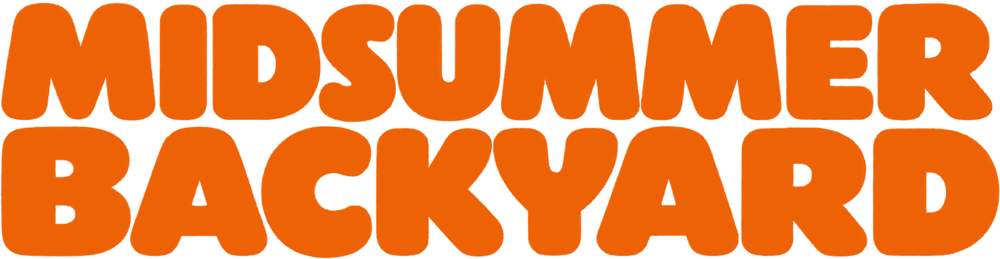

3. AuflageFreiburg im Breisgau6,706 km je Stunde
Sa 19.06.2027 · 06:00 Uhr · Dreisam, Hirzbergsteg
Jede volle Stunde dieselbe Runde. Wer sie nicht schafft, ist raus — bis nur noch eine Person läuft.
Der Hero besteht aus fünf freigestellten Bildern, die beim Scrollen unterschiedlich schnell mitlaufen. Je weiter hinten eine Ebene liegt, desto träger folgt sie — daraus entsteht die Tiefe. Am Mauszeiger verschieben sich die Ebenen zusätzlich seitlich, die vorderste am stärksten.
In Fassung A steht das Logo vollständig vor der Bergkette. In Fassung B geht die Sonne hinter dem Kamm auf: die Berge schneiden die Unterkante von Sonne und Schriftzug weg. Umschalten rechts unten oder mit der Taste V.
Die drei Landschaftsbilder haben eine Morgenlicht-Abstufung eingebacken — nach hinten hin dunstiger und blasser, nach vorn dunkler und wärmer. Das ist der Grund, warum der Stapel als Tiefe gelesen wird und nicht als drei aufeinandergelegte Fotos. Die Originale im Ordner Bildmaterial sind unverändert.
V wechselt die Fassung